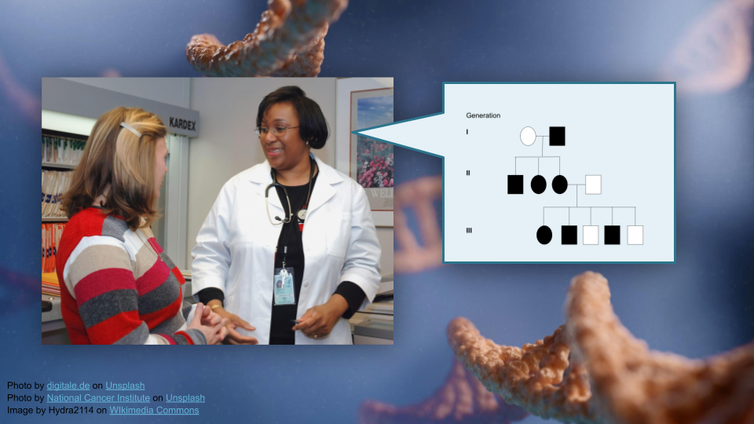
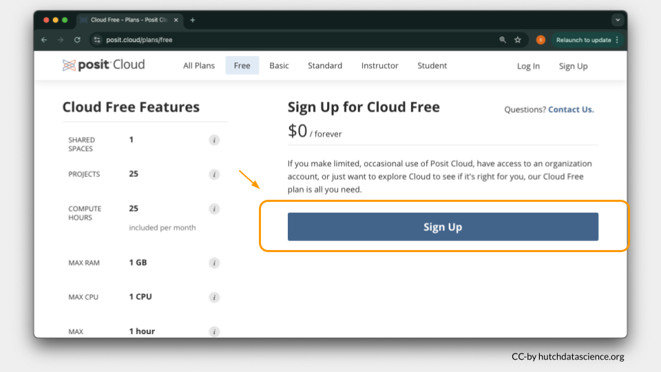
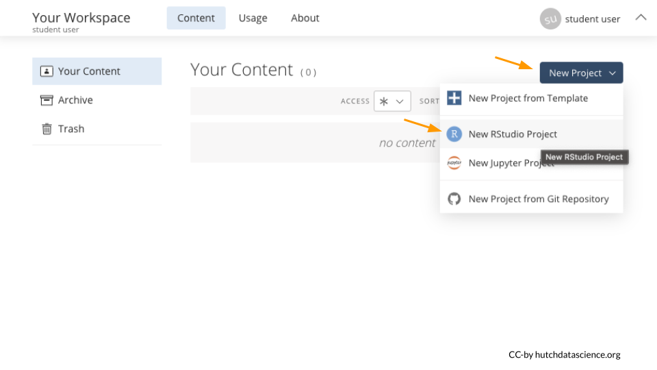
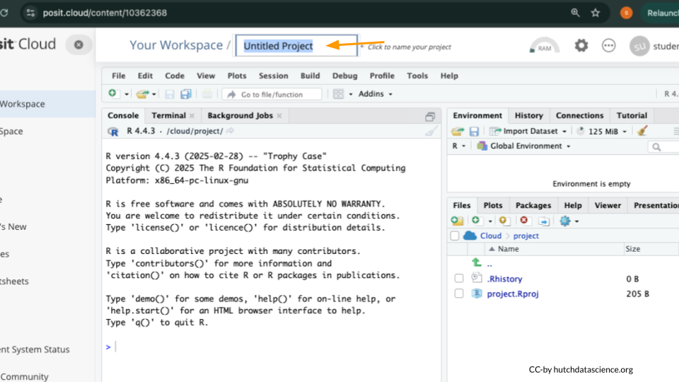
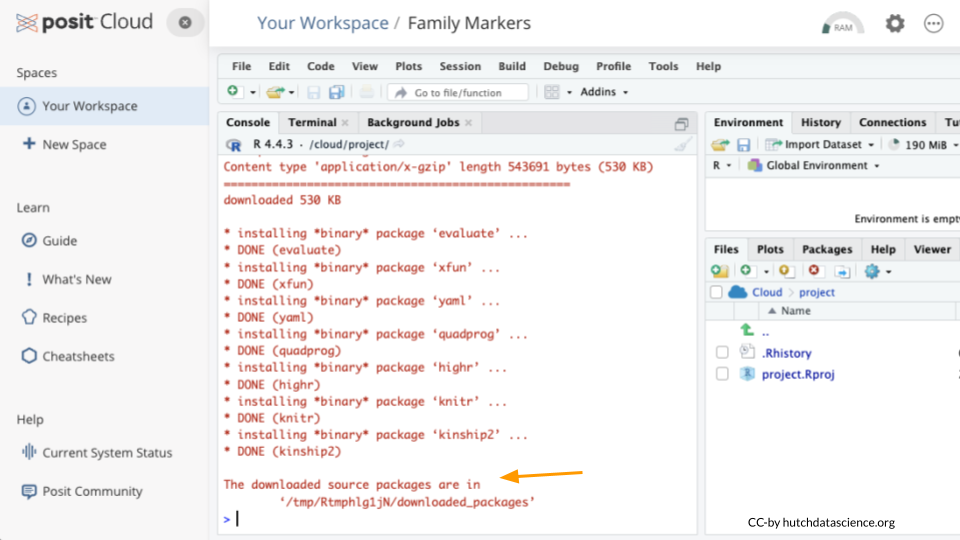
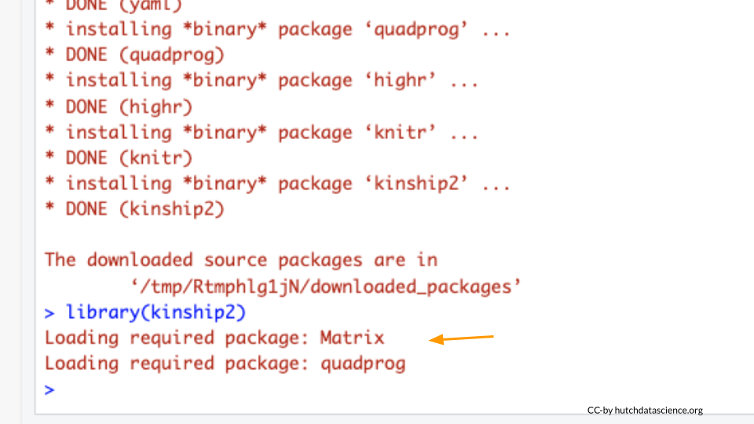
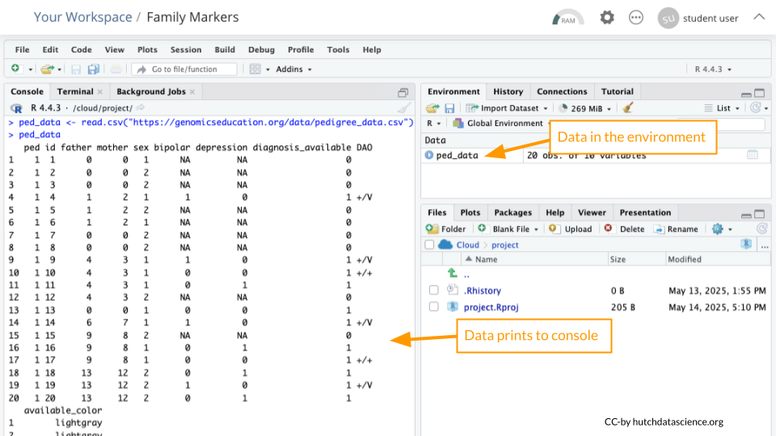
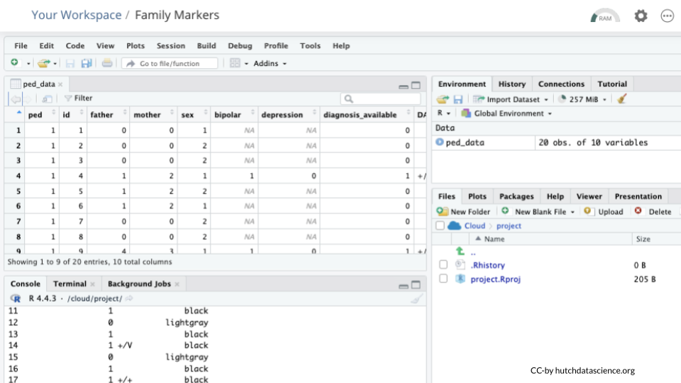

Family Markers: Using Multiply-Affected Families to Identify Risk Genes
Learning Objectives
Interpret pedigree information to determine the suitability of a DNA marker for tracking a disease trait in a family (see GSA learning objectives).
Build a pedigree using bioinformatics tools (R).
Materials
You will need an internet connection for this activity as written. Students can use a local installation of R or RStudio if the data is downloaded ahead of time.
Download this module as:
- Quarto (qmd)
- Word (docx)
Download the R student activity as:
- Quarto (qmd)
- Word (docx)
Borrow images from Google Slides.
Part 1
In Part 1, we’ll go over some background context for this activity. Then, we’ll get set up on Posit Cloud for the next steps.
Background
First, let’s read the “plain language” summary from a publication entitled “Rare variants implicate NMDA receptor signaling and cerebellar gene networks in risk for bipolar disorder”.
This research explores the genetic basis of bipolar disorder, a serious mental health condition where people experience extreme mood swings between mania and depression. The researchers studied DNA from 41 families with multiple members affected by bipolar disorder. They identified 741 genes potentially linked to bipolar disorder, which overlapped with genes known to be involved in other brain development disorders. Their most significant finding was a specific variant in a gene called DAO (D-amino acid oxidase). When they tested this variant in human cells, it reduced the amount and activity of the DAO protein. In mice with the equivalent genetic change, they observed: (1) less DAO protein in certain brain regions, (2) greater susceptibility to stress, (3) altered responses to drugs affecting NMDAR (a type of brain receptor), and (4) changes in gene activity patterns in the cerebellum (a brain region). The team also found similar gene expression patterns in the cerebellum of human bipolar disorder patients. The study suggests bipolar disorder may involve disruptions to NMDAR signaling and gene expression in the cerebellum, providing new insights into how this condition develops at the molecular level.
As the researchers mentioned in their summary, bipolar disorder is neuropsychiatric disorder that affects moods. “Neuropsychiatric” means that it involves both the structure of the brain and mental health. People with bipolar disorder may experience “low” periods of intense sadness, low energy, low motivation, and loss of interest in daily activities, as well as “high periods” of increased energy, decreased need for sleep, and potentially hallucinations or an altered sense of reality. While everyone will experience mood swings, in people with bipolar disorder these swings are more extreme and may last for weeks. Bipolar disorder is triggered by a combination of genetic and environmental factors, and the risk of developing bipolar disorder is about 1% for the general public. For someone who has a parent with bipolar disorder, this risk is between 10% and 25%. Interestingly, people who have a parent with schizophrenia also have an increased risk of developing bipolar disorder compared to the general population, which suggests there may be a shared genetic basis to both disorders (as well as with major depression).
The cerebellum is the region of the brain located just above the spinal cord. Size-wise, it’s about 10% of the brain, but it contains roughly 50% of the neurons. Scientists started noticing more than 200 years ago that people with cerebellum injuries frequently had difficulty maintaining their balance (either while standing or while walking), as well as difficulty with judging how far to reach when picking up objects. People with these types of injuries may also have difficulty judging how far objects are, learning new motor skills, or keeping consistent timing when tapping their fingers. The cerebellum essentially coordinates motor movement and gait, maintains posture and balance, and controls muscle tone (the amount of tension in the muscle) and voluntary muscle activity. More recently, scientists have discovered that the cerebellum also plays a role in attention, language, and regulating emotional responses like fear and pleasure, though the specific details on how are still under investigation.
NMDA receptors (NMDAR), or N-methyl-D-aspartic acid receptors, are a type of glutamate receptor in the brain. When an NMDAR binds both glutamate and glycine, it opens a channel that allows positively charged ions (like calcium ions) to flow into the neuron. The movement of calcium ions through NMDARs is thought to be particularly important for memory and learning. Drugs such as alcohol, PCP, ketamine, and nitrous oxide block NMDAR activity.
Check Your Knowledge
What does the DAO gene do?
How did researchers identify DAO and other possible genes linked to bipolar disorder?
Start Posit Cloud
In the next steps, we will construct a pedigree from the publication described above.
We will use Posit Cloud for this activity. Go to https://posit.cloud/plans/free and follow the steps to sign up. You can also Log In using the button on the top right if you have used Posit Cloud in the past.

Once logged in, select “New Project” and “New RStudio Project”. It will take a few seconds to deploy and load.

Rename your project “Family Markers” by clicking on “Untitled Project”.

Package Install and Load
We will need to install the kinship2 package for this activity.
Type the following into your console and press return to run the code. You will see a lot of red text, but usually that’s a good thing!
install.packages("kinship2")
Next, we will load the package so it’s ready to use:
library(kinship2)
What are R Packages?
Packages are collections of R code, data, and documentation that extend the base functionality of R. Think of them like “expansion packs” on top of your basic R software.
Packages are developed by the R community and made available through repositories like CRAN (Comprehensive R Archive Network), Bioconductor, and GitHub. They are especially useful if you want to do a specialized kind of analysis, such as genomic analysis!
We use the library command to load and attach packages to the R environment. This means links the package you downloaded to your current session of R.
Get Pedigree Data
We’ll read in some data from the GEMs website. Run the following code in your console:
ped_data <- read.csv("https://genomicseducation.org/data/pedigree_data.csv")
ped_data ped id father mother sex bipolar depression diagnosis_available DAO
1 1 1 0 0 1 NA NA 0
2 1 2 0 0 2 NA NA 0
3 1 3 0 0 2 NA NA 0
4 1 4 1 2 1 1 0 1 +/V
5 1 5 1 2 2 NA NA 0
6 1 6 1 2 1 NA NA 0
7 1 7 0 0 2 NA NA 0
8 1 8 0 0 2 NA NA 0
9 1 9 4 3 1 1 0 1 +/V
10 1 10 4 3 1 0 0 1 +/+
11 1 11 4 3 1 0 1 1
12 1 12 4 3 2 NA NA 0
13 1 13 0 0 1 0 0 1
14 1 14 6 7 1 1 0 1 +/V
15 1 15 9 8 2 NA NA 0
16 1 16 9 8 1 0 1 1
17 1 17 9 8 1 0 0 1 +/+
18 1 18 13 12 2 0 1 1
19 1 19 13 12 2 1 0 1 +/V
20 1 20 13 12 2 0 1 1
available_color
1 lightgray
2 lightgray
3 lightgray
4 black
5 lightgray
6 lightgray
7 lightgray
8 lightgray
9 black
10 black
11 black
12 lightgray
13 black
14 black
15 lightgray
16 black
17 black
18 black
19 black
20 blackIf everything went correctly, you should see both an object called ped_data in the Environment Pane (top right) and the data printed to the console.

What is an R object?
An object is something stored in a programming language, such as data. Think of it like a “noun”.
In R, we assign objects using the <- symbol, with the name of your choice on the left, and the contents of the object on the right.
Objects will show up in your Environment Pane. It’s a good idea to check the Environment Pane regularly.
Enter the following code in the console to view the data in tabular format:
View(ped_data)
Data Dictionaries
Take a look at the column names. Compare these to the data dictionary below to interpret what the columns represent.
Pedigree Data Dictionary
ped: Pedigree identifier for family relationships.
id: Unique individual identifier.
father: Identifier of the father in the pedigree.
mother: Identifier of the mother in the pedigree.
sex: Sex of the individual (assume sex assigned at birth, not gender identity).
bipolar: Bipolar disorder status (1 = yes, 0 = no, NA = missing).
depression: Depression status (1 = yes, 0 = no, NA = missing).
diagnosis_available: ???
DAO: DAO genotype.
available_color: Pedigree color variable corresponding to diagnosis_available.
Part 1 Questions
Check Your Knowledge
Why might we want to install add-on packages in R?
How can we confirm that our data loaded correctly?
Looking at the description and contents of the
bipolaranddepressioncolumns, what do you think the columndiagnosis_availablerepresents?
Part 2
Now, we’ll run R code that generates a pedigree!